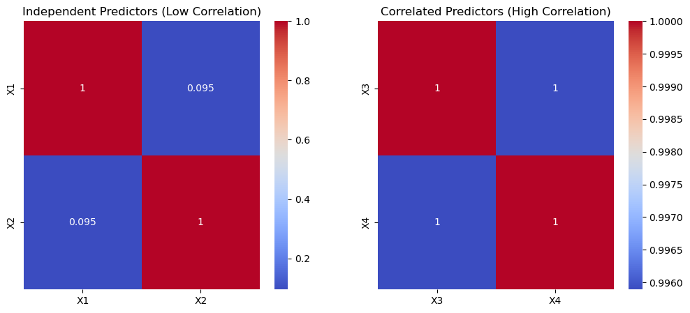

Variance Inflation Factor (VIF)#
Definition: VIF measures how much the variance of a regression coefficient is inflated due to multicollinearity (correlation among predictors).
If predictors are highly correlated, the coefficient estimates become unstable (large standard errors).
🔹 Formula#
For a predictor \(X_j\):
where
\(R_j^2\) is the coefficient of determination when \(X_j\) is regressed on all other predictors.
🔹 Interpretation of VIF#
VIF = 1 → No correlation with other variables.
1 ≤ VIF < 5 → Moderate correlation, usually acceptable.
VIF ≥ 5 (or 10, depending on rule of thumb) → High multicollinearity, problematic.
🔹 Why it Matters#
Multicollinearity doesn’t affect model prediction much, but it makes interpretation of coefficients unreliable.
Standard errors inflate → wider confidence intervals → coefficients may appear insignificant.
🔹 Example#
Suppose in a housing price regression:
Predictors:
sqft,bedrooms,bathrooms.sqftandbedroomsare highly correlated (bigger houses tend to have more bedrooms).VIF for
bedroomsmight be very high → its coefficient estimate becomes unstable.
👉 So, VIF is a diagnostic tool to check if your regression model suffers from multicollinearity.
import numpy as np
import pandas as pd
import matplotlib.pyplot as plt
import seaborn as sns
from statsmodels.stats.outliers_influence import variance_inflation_factor
import statsmodels.api as sm
# Create synthetic dataset
np.random.seed(42)
n = 200
# Independent predictors (low correlation case)
X1 = np.random.normal(0, 1, n)
X2 = np.random.normal(0, 1, n)
Y = 3*X1 + 2*X2 + np.random.normal(0, 1, n)
# Correlated predictors (high correlation case)
X3 = np.random.normal(0, 1, n)
X4 = X3 + np.random.normal(0, 0.1, n) # highly correlated with X3
Y_corr = 3*X3 + 2*X4 + np.random.normal(0, 1, n)
# Put into DataFrames
df_independent = pd.DataFrame({'X1': X1, 'X2': X2, 'Y': Y})
df_correlated = pd.DataFrame({'X3': X3, 'X4': X4, 'Y_corr': Y_corr})
# Function to compute VIF
def compute_vif(df, features):
X = sm.add_constant(df[features])
vif_data = pd.DataFrame()
vif_data['Feature'] = features
vif_data['VIF'] = [variance_inflation_factor(X.values, i+1) for i in range(len(features))]
return vif_data
# Compute VIF for both cases
vif_independent = compute_vif(df_independent, ['X1', 'X2'])
vif_correlated = compute_vif(df_correlated, ['X3', 'X4'])
# Plot heatmaps of correlation matrices
fig, axes = plt.subplots(1, 2, figsize=(12, 5))
sns.heatmap(df_independent[['X1','X2']].corr(), annot=True, cmap="coolwarm", ax=axes[0])
axes[0].set_title("Independent Predictors (Low Correlation)")
sns.heatmap(df_correlated[['X3','X4']].corr(), annot=True, cmap="coolwarm", ax=axes[1])
axes[1].set_title("Correlated Predictors (High Correlation)")
plt.show()
vif_independent, vif_correlated

( Feature VIF
0 X1 1.009136
1 X2 1.009136,
Feature VIF
0 X3 121.983031
1 X4 121.983031)